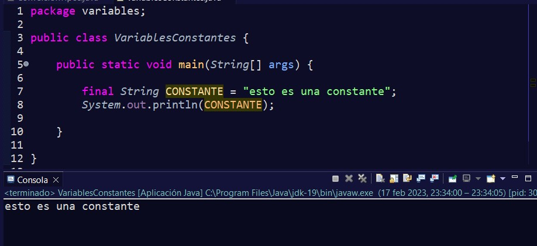
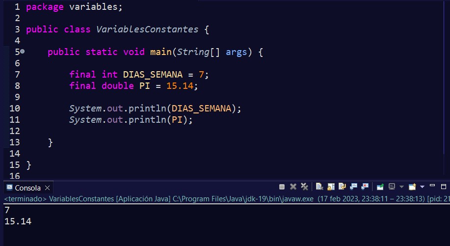
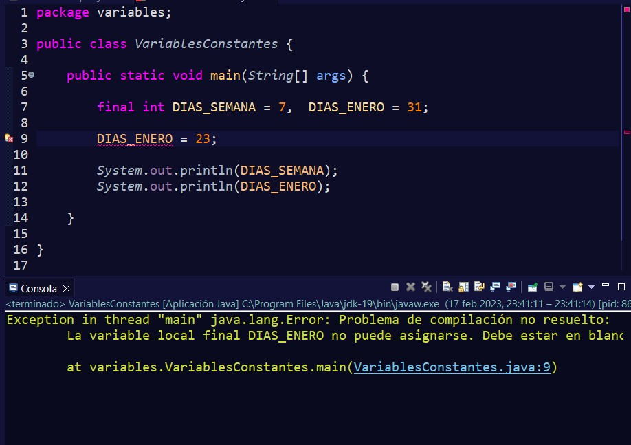

Constantes en Java
Las constantes son muy similares a las variables, reservan un espacio en memoria, pero una constante no cambia a lo largo de toda la vida del programa y siempre tendrá el mismo tipo de dato y valor.

Una constante lleva la palabra reservada final para indicar que es una constante.

- Se suelen escribir en mayúsculas y para separar en caso de que tenga más de una palabra, se coloca un guión bajo: final int DIAS_SEMANA;
- Sólo está permitido el alfabeto de la lengua inglesa, dígitos, guion bajo _ y el símbolo dólar $. por ejemplo, final int AÑO; no es correcto.
- Si nuestra variable contiene números, jamás lo hará al principio de ésta. Por ejemplo, String 1NUMERO; es incorrecto.
- Java es sensible a mayúsculas y minúsculas (case sensitive), así que no es lo mismo nombre que NOMBRE.
- No puede haber espacios en el nombre. Es decir, si nuestra variable se compone de dos nombres, no podíamos escribir int FECHA NACIMIENTO;. Esto daría error.
- No se podrán utilizar las palabras reservadas que existen en el lenguaje.
- Tampoco puede ser true, false o null.
Si intentáramos cambiar el valor de la constante a lo largo de nuestro programa, marcaría un error en compilación. Por lo que no podríamos compilarlo mientras esté ese cambio.
